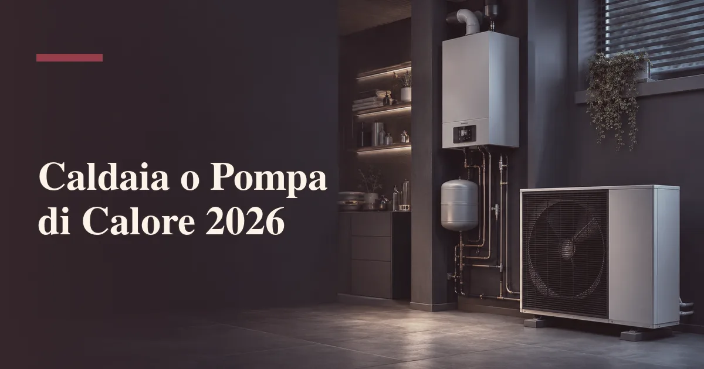

Come funzionano le due tecnologie?
La caldaia a condensazione brucia gas e recupera il calore latente dei fumi, arrivando a rendimenti del 95-108% sul potere calorifico inferiore: è il meglio che la combustione possa offrire, maturo, affidabile e servito da una rete capillare di tecnici in tutta Italia. La pompa di calore aria-acqua non brucia nulla: usa l'elettricità per spostare calore dall'aria esterna all'acqua dell'impianto, come un frigorifero che lavora al contrario. Il punto è tutto qui: per ogni kWh elettrico assorbito ne consegna 3-4 termici — è il COP, coefficiente di prestazione — perché gran parte dell'energia non la produce, la preleva gratuitamente dall'ambiente.
Questa differenza strutturale spiega sia i vantaggi sia i limiti. La pompa di calore è imbattibile in efficienza, non ha canna fumaria né controlli fumi, fa raffrescamento estivo con gli stessi terminali e si integra naturalmente con il fotovoltaico. Ma la sua efficienza dipende dalla temperatura: più l'aria esterna è fredda e più l'acqua di mandata dev'essere calda, più il COP scende. La caldaia a gas, al contrario, rende quasi uguale a -5°C come a +10°C e non ha problemi a mandare acqua a 70°C. La scelta tra le due non è tra vecchio e nuovo: è tra due profili di funzionamento che si adattano a case diverse.
I consumi reali a confronto
Facciamo i conti su un caso tipo: appartamento di 100 mq in zona climatica E (Nord Italia), fabbisogno di riscaldamento 8.000 kWh termici annui più acqua calda sanitaria. Con la caldaia a condensazione a rendimento del 100% servono circa 800-850 mc di gas l'anno: ai prezzi 2026 indicativi di 1,10-1,30 euro/mc in tariffa tutelata equivalente, sono 900-1.100 euro annui. Con la pompa di calore a COP medio stagionale (SCOP) 3,5 servono circa 2.300 kWh elettrici: a 0,28-0,32 euro/kWh sono 650-750 euro annui, con un risparmio del 25-35% che sale al 40-50% se una parte dell'energia arriva dal fotovoltaico o da una tariffa bioraria sfruttata con l'accumulo termico.
| Scenario | Caldaia condensazione | Pompa di calore (SCOP 3,5) | PdC + fotovoltaico |
|---|---|---|---|
| Casa isolata, mandata 40°C | ~1.000 €/anno | ~650-700 €/anno | ~400-500 €/anno |
| Casa media, mandata 50°C | ~1.100 €/anno | ~800-900 €/anno | ~600-700 €/anno |
| Casa scarsa, mandata 65°C | ~1.300 €/anno | ~1.200-1.400 €/anno | ~1.000-1.200 €/anno |
La tabella mostra il punto chiave: il vantaggio della pompa di calore si restringe al crescere della temperatura di mandata, perché il COP scende da 4 a 2,5 e oltre. Ed è proprio la mandata — cioè il tipo di casa e di impianto — a decidere chi vince il confronto, molto più dei prezzi dell'energia, che cambiano di anno in anno mentre la fisica dell'impianto resta.
Perché la temperatura di mandata decide tutto?
Ogni impianto di riscaldamento è progettato per una temperatura dell'acqua: i pannelli radianti a pavimento lavorano a 30-38°C, i ventilconvettori a 35-45°C, i termosifoni dimensionati negli anni '70-'90 a 60-75°C. La pompa di calore esprime il suo potenziale sotto i 45°C: con mandata a 35°C il COP supera 4, a 55°C scende verso 2,5-3, a 65°C — dove serve — sfiora 2 e il vantaggio economico sulla caldaia si assottiglia fino a sparire nei giorni più freddi. Per questo la prima verifica da fare, prima ancora dei preventivi, è la verifica dei terminali: quanti elementi radianti ci sono, in quali stanze, a quale mandata riescono a scaldare la casa nelle giornate fredde.
Le buone notizie sono due. La prima: molte case con termosifoni possono lavorare a 50-55°C invece che a 70°C semplicemente tenendo il riscaldamento acceso più a lungo — la potenza erogata dipende da temperatura e tempo — e un termotecnico lo verifica con un calcolo di un'ora. La seconda: gli interventi per abbassare la mandata — aggiungere qualche elemento radiante, sostituire i termosifoni delle stanze critiche, installare ventilconvettori — costano una frazione dell'impianto e trasformano una casa «da caldaia» in una casa «da pompa di calore». La combinazione con il riscaldamento a pavimento resta il matrimonio perfetto: mandata bassissima, comfort alto, raffrescamento estivo incluso.
Quanto contano clima e isolamento?
Il secondo fattore è dove si trova la casa. Nelle zone climatiche A-D — coste, Centro-Sud, pianure miti — la pompa di calore lavora quasi sempre nelle condizioni ideali: inverni miti, COP alti, e il raffrescamento estivo arriva gratis dalla stessa macchina. Nelle zone E-F il discorso si complica: sotto lo zero le prestazioni calano e le macchine entrano in cicli di sbrinamento; le pompe di calore moderne gestiscono bene fino a -15/-20°C, ma il COP medio stagionale nelle valli alpine resta inferiore a quello della pianura. L'isolamento fa da moltiplicatore: in una casa in classe E-F il fabbisogno è alto e concentrato nei giorni freddi, esattamente quando la pompa di calore rende meno; in una casa riqualificata in classe A-B il fabbisogno è così basso che anche un COP modesto produce bollette irrisorie.
La sintesi che i progettisti usano: la pompa di calore premia le case efficienti e i climi miti, la caldaia a condensazione perdona le case disperse e i climi rigidi. Chi ristruttura profondamente — cappotto, infissi, ventilazione — trova nella pompa di calore il completamento naturale dell'intervento, anche perché la Direttiva Case Green traccia per l'Europa la strada dell'abbandono progressivo delle caldaie a combustibile fossile autonome, e scegliere oggi una caldaia nuova significa scommettere su una tecnologia che il mercato e le norme spingono verso l'uscita.
Quando la risposta è il sistema ibrido?
Tra i due estremi c'è la terza via: il sistema ibrido, pompa di calore più caldaia a condensazione gestite da un'unica regolazione. La pompa di calore lavora per la gran parte dell'inverno, quando le temperature miti le consentono COP eccellenti; la caldaia interviene nei giorni più freddi, quando il gas torna competitivo, e copre i picchi di acqua calda sanitaria. La regolazione sceglie automaticamente il generatore più conveniente in base alla temperatura esterna e, nei sistemi evoluti, ai prezzi dell'energia. Il risultato tipico: 70-85% del fabbisogno coperto dalla pompa di calore, bolletta vicina a quella della sola pompa di calore, e la sicurezza della caldaia nei giorni di gelo.
L'ibrido è la scelta pragmatica dove il salto completo non si può fare: termosifoni ad alta temperatura che non si vogliono sostituire, appartamenti con vincoli per l'unità esterna, climi rigidi, budget che non copre la riqualificazione dell'involucro. Costa più della sola caldaia e meno di pompa di calore più adeguamento impianto, e negli incentivi è trattato in modo specifico. È anche la soluzione che molti installatori propongono come compromesso: va valutata con attenzione, perché se la casa può lavorare a bassa mandata tutto l'anno, la pompa di calore pura rende di più e la caldaia resta un costo fisso poco usato.
Quanto costano installazione e gestione?
Nel 2026 la sostituzione della caldaia a condensazione costa 1.800-3.200 euro installata per un appartamento tipo: è l'intervento più semplice, mezza giornata di lavoro, nessuna modifica all'impianto. La pompa di calore aria-acqua per riscaldamento e ACS costa 7.000-13.000 euro installata per una casa unifamiliare, a seconda di potenza, accumulo sanitario e lavori idraulici; il sistema ibrido si colloca a 6.000-10.000 euro. Ai costi di impianto vanno aggiunti quelli di gestione: la caldaia richiede manutenzione annuale e controllo fumi biennale (80-150 euro/anno), la pompa di calore una manutenzione più leggera, e la vita attesa è di 15-20 anni per la caldaia contro 15-25 per la pompa di calore ben mantenuta.
| Voce | Caldaia condensazione | Sistema ibrido | Pompa di calore |
|---|---|---|---|
| Installazione tipo | 1.800-3.200 € | 6.000-10.000 € | 7.000-13.000 € |
| Manutenzione annua | 80-150 € | 100-180 € | 80-150 € |
| Costo energetico (casa media) | Alto | Medio-basso | Basso |
| Raffrescamento estivo | No | Parziale | Sì (stessa macchina) |
| Incentivi 2026 | Limitati | Buoni | Massimi |
Il conto economico completo si fa sulla vita utile: con un risparmio annuo di 300-600 euro e incentivi che coprono una quota rilevante dell'extra-costo, la pompa di calore recupera la differenza in 5-9 anni nella maggior parte degli scenari, per poi produrre risparmio puro per il resto della vita utile. Il confronto tra i modelli sul mercato è nel nostro articolo sulle 5 migliori pompe di calore del 2026.
Quali incentivi nel 2026?
Il quadro incentivi spinge chiaramente verso l'elettrificazione. La pompa di calore accede al Conto Termico 3.0 — incentivo diretto del GSE erogato in 2-5 anni, calcolato sulla quota di rinnovabile prodotta — e all'Ecobonus con detrazione del 50% sulla prima casa, cumulabile con i limiti previsti. Le due strade si differenziano: il Conto Termico premia di più le macchine efficienti in climi freddi e non richiede capienza fiscale, l'Ecobonus spalma il beneficio in 10 anni ma si applica a una platea più ampia di interventi. Dettagli, importi e procedura nella nostra guida al Conto Termico 3.0 e nella guida all'Ecobonus.
La sostituzione della sola caldaia a gas, invece, ha incentivi ridotti rispetto al passato: la tendenza europea e nazionale è di non premiare più l'installazione di nuovi generatori a combustibile fossile autonomi, e le aliquote riservate a questi interventi sono le più basse del panorama. La scelta incentivata è quindi coerente con quella tecnica: pompa di calore dove l'impianto lo consente, ibrido dove serve la sicurezza della caldaia, caldaia semplice solo dove nessuna delle due è praticabile. In ogni caso, l'intervento va progettato da un termotecnico con legge 10 aggiornata: è il documento che certifica il dimensionamento corretto e apre la strada a incentivi e detrazioni.
Domande frequenti
La pompa di calore conviene con i termosifoni?
Dipende dalla mandata: se i termosifoni bastano a 50-55°C sì; sopra i 60-65°C il COP crolla e conviene l'ibrido o l'aggiunta di elementi.
Quanto consuma una pompa di calore in bolletta?
Circa 2.000-2.500 kWh l'anno per una casa da 100 mq in zona E (SCOP 3,5): 600-800 euro, meno con fotovoltaico o bioraria.
La pompa di calore funziona sotto zero?
Sì, fino a -15/-25°C con COP ridotto e sbrinamenti. Nei climi alpini va verificato il dimensionamento sulla temperatura di progetto.
Meglio Conto Termico o Ecobonus per la pompa di calore?
Dipende: il Conto Termico eroga in 2-5 anni senza capienza fiscale; l'Ecobonus detrae il 50% in 10 anni. Non sono cumulabili sullo stesso intervento.
La caldaia a gas sarà vietata?
Nessun divieto immediato, ma la tendenza UE è l'uscita progressiva, con incentivi già ridotti: va considerato l'orizzonte della tecnologia.
Fonti: Schede tecniche e SCOP dichiarati dai principali produttori; prezzi medi dell'energia per utenti domestici 2026; regole applicative Conto Termico 3.0 (GSE) e guide Agenzia delle Entrate/ENEA sulle detrazioni; listini installatori italiani. I consumi reali dipendono da clima, involucro, terminali e abitudini: il dimensionamento di un termotecnico resta il riferimento per il singolo caso.